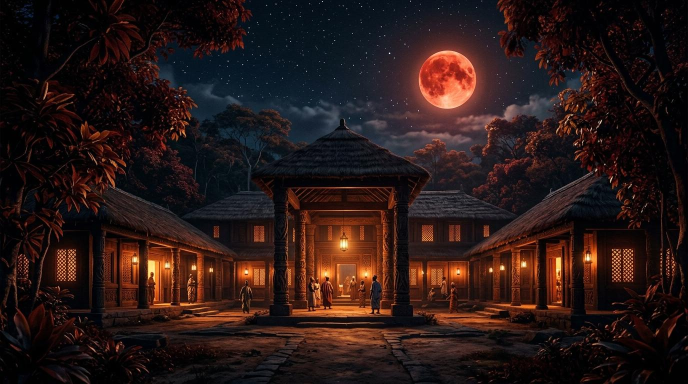

CHAPTER 00 — ÀBÁWỌLÉ · THE ROYAL THRESHOLD
Where ancestral form reveals the unseen.
Enter the sacred realm through its quiet thresholds, where ritual, craft and spatial memory shape the path.
SCROLL TO ENTER
01
Ilé Ìmọ̀
Manifesto
02
Àkòdì
Gallery
03
Ẹwà
The Lab
04
Òpómúléró
Craft & Ethos

Àfin Ìmọ̀ Echo v4 — Spatial Suite
òpó múlé ró
01 — Ilé Ìmọ̀ · The Royal Archive
ìpìlẹ̀ àgbà
Three architectural pillars built for enduring scale.
Like the ancient bronze casters and master carvers of the Ọ̀yọ́ kingdom, we believe enduring software requires structural integrity, cognitive economy, and sensory majesty.
Every interface is forged as a sacred space: fast, light, mathematically composed, and resilient across generations of devices and viewports.
Explore the Gallery of Artifacts08+Years in Craft
60fpsTarget Frame Rate
100%Type Safety
0.8sAvg. First Paint
02 — Àkòdì · Selected Works Gallery
iṣẹ́ àgbà
Tactile digital monoliths and spatial architectures.
A curated exhibition of flagship applications, interactive 3D WebGL experiences, and design systems.
02 / 03
ÀTÙPÀ
Lantern Sanctuary
03 / 03
ÒPÓ MÚLÉ RÓ
Laterite Shrine Walk
03 — Àkòdì Ẹwà · The Kinetic Laboratory
ẹwà àbíkẹ́
Kinetic studies, GLSL shaders & procedural mechanics.
Inspired by the swirling Aṣọ-Òkè panels and cowrie lattice of the Egúngún masquerade in motion, the laboratory is where we stress-test WebGL physics solvers and reactive motion algorithms.
01
Egúngún Kinetic Ribbon Physicsaṣọ ẹ̀mí
Multi-frequency Simplex noise ribbons simulating the flowing, swirling drapery of sacred masquerades.
WebGL / Shaders
02
Deterministic Scroll Conductoràsìkò ìṣe
Frame-rate independent damping (`damp`) binding native document scroll to 3D camera splines.
Architecture
03
Àtùpà Volumetric Fire Scatteringiná àtùpà
Dynamic point light flicker physics illuminating burnished laterite earth and carved Iroko columns.
GLSL Shaders
04
Cowrie Particle Dynamics (Ẹyọ Owó)ẹyọ owó
Floating 3D particulate field reacting dynamically to mouse gravity and scroll velocity.
Physics Engine
05
Zero-Bloat DOM Orchestrationìmọ̀ jíjinlẹ̀
Achieving 60fps cinematic fluidity without heavy animation dependencies or memory overhead.
Performance
04 — Òpómúléró · The Pillar of Strength
ìpìlẹ̀ líle
Òpó tó múlé ró: The pillar that holds the sanctuary.
In ancient Yoruba monumental architecture, the Ọ̀pó is not merely a post—it is an ancestral testament to balance, equilibrium, and structural mastery.
We engineer digital monoliths with the same uncompromising ethos: zero bloat, mathematically rigorous foundations, deterministic state management, and resilient longevity across generations of hardware.
01 / Ìwà (Integrity)
Clean code architecture, strict type safety, zero hidden debt, and deterministic state flows.
02 / Ẹwà (Sublime Form)
Disciplined visual hierarchy, bespoke kinetic typography, and tactile material honesty.
03 / Ìfaradà (Resilience)
Sub-second initial paint, 60fps WebGL spline execution, and cross-device performance.
04 / Àṣẹ (Kinetic Power)
Dynamic GLSL procedural shaders, Simplex noise ribbons, and hardware-accelerated physics.
Core Engineering Architecture
ìmọ̀ ẹ̀rọType-safe full-stack platforms, continuous WebGL pipelines, and high-concurrency real-time protocols.
Spatial & 3D Toolchain
àwòrán 3DParametric modeling, PBR material synthesis, and precision vector tokenization systems.
0.0msLayout Shifts
60fpsSpline Physics
100%Native Execution
0Runtime Bloat
05 — Àṣẹ · Manifestation & Royal Dispatch
àṣẹ ìran
Àṣẹ: Let us create what has not been seen yet.
Currently partnering with forward-thinking founders, creative agencies, and engineering teams on flagship digital platforms, 3D spatial web apps, and bespoke design systems.
01
Spatial Architectures & 3D Worlds
Bespoke interactive WebGL experiences, continuous camera splines, and procedural shader simulations.
02
Flagship Digital Platforms
Mission-critical web applications, high-frequency user interfaces, and robust full-stack architecture.
03
Atelier Design Systems
Mathematical layout tokens, kinetic interaction models, and multi-platform design infrastructure.